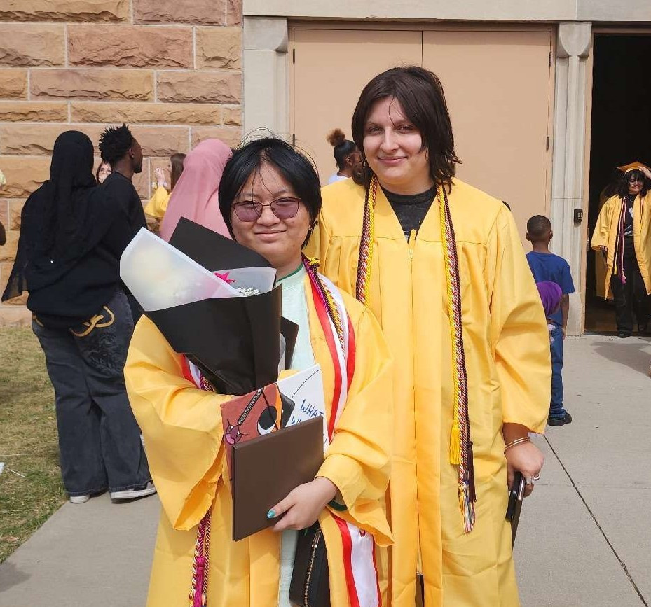

Hello! I am Orion Nguyen, an aspiring Product Designer with a passion for arts and crafts. Growing up as a first generation Asian American defined a lot of my childhood, and my parents have always wanted me to succeed. We didn’t always have the most grand living conditions, but that never stopped me from being able to pursue my interests. When I first went into college, I had planned to study Computer Science, but eventually changed my major to Industrial Design to better align with what I want to do. My entire life I have always loved creating and crafting things, and I want to continue to use these skills in my future.

I have developed many skills throughout my high school years, most of which I plan to continue to work on at MSU. Some of these skills include:
Check out some of my projects here!
View ProjectsI have been developing skills in web design with HTML and am interested in expanding knowledge on programming software for entertainment.
I worked as my high school’s Prop Master, where I managed and created technical theatre props for many productions such as Alice in Wonderland, Mamma Mia!, Noises Off, and Into the Woods.
Contact me if you have any questions or would like to collaborate!
email, github link, instagram link, discord link